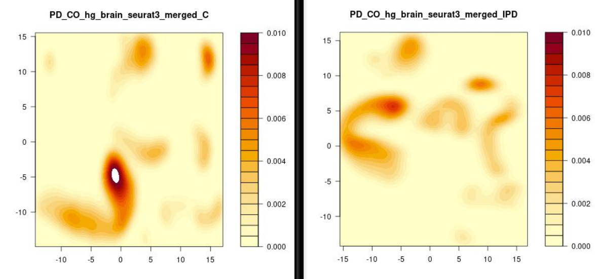

Summary of original approach's re-analysis
We attempted to reanalyse an original approach presented by Smajic et. al. in their "Single-cell sequencing of the human midbrain reveals glial activation and a neuronal state specific to Parkinson’s disease" paper.
First, using the fastq-dump command, we retrieved seperate FASTQ files separate for forward and reverse reads from raw data stored in the NCBI short read archive (SRA) in project SRP281977. These FASTQ files can be found HERE.
From this, we obtained a gene-barcode UMI count matrix per sample using the CellRanger count pipeline, using the recomended variation of the human reference transcriptome (hg38), which was used to generate a custom pre-mRNA reference transcriptome that defines the entire gene body to be an exon.
After this, by following the bash workflow scripts “run_analysis_midbrain.sh” avaiable on github, we performed quality control on each sample. Then, we filtered out barcodes that had less than 1500 UMIs and 1000 genes, more than 10% of mtDNA and ribosomal genes. Results of filtering are presented in form of charts below.
Chart 1: Number of features in each sample before (RAW) and after filtering
Chart 2: Number of cells in each sample before (RAW) and after filtering
Following this, we performed normalization, sample integration and clustering. This step involved two approaches:
I. Without normalization using the SCTransform approch
II. With normalization using the SCTransform approch
In total, we embedded the 44,921 nuclei transcriptomes into two dimention using the UMAP algorithm. Approach II generated two t-SNE and UMAP plots before and after batch correction.
Figure 1A: Embeddings based on the top 25 non-corrected principal components
Figure 1B: Sample before batch correction
Figure 2A: Embeddings based on the top 25 principal components after removing the inter-individual variability.
Figure 2B: Sample before batch correction
Further, we identified gene markers and found 7 major group cells (Figure 3)
Figure 3: Marker gene identification output with normalization step (Approach II)
For comparision, Figure 4 presents marker gene identification output without normalization step (Approach I). Here, 8 major group cells are presented.
Figure 4: Marker gene identification output with normalization step (Approach I)
Wilcoxon statistical test was applied in performed re-analysis. The TSV outut file generated was used for Gene Search function on this website. Figure 5 presents genes markers heatmap across major group cells.
Figure 5: Wilcoxon gene markers heatmap
Moreover, Expression distribution of cell-type marker genes on ~45,000 midbrain cells can be found HERE.
Lastly, we estimated differential cell type contribution in IPD and control samples.
Figure 6: Composition of nuclei from IPD and control samples to different clusters
Figure 7: Proportion of IPD and control samples profiled cells per cluster.
Figure 8: Heatmap presenting differential cell types density in control and IPD samples.
In conclusion, we were not able to re-analyse the original approach due to numerous issues with the script provided by the original paper's authors. Moreover, due to the missing file, we were forced to create an alternative analysis with the use of draft R scripts, of which the results are presented above.